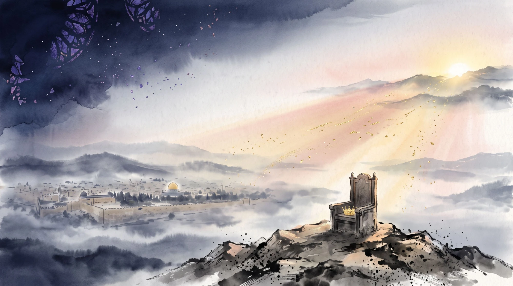

第一階段
推定的彌賽亞
bechezkat Mashiach
一位出自大衛家的君王興起，鑽研妥拉、遵行誡命，帶領全以色列遵行妥拉並鞏固其破口，並為神爭戰。

關於本書
本書的核心論點很簡單：猶太教與基督教雖然使用同一個詞「彌賽亞」，指的卻是兩個不同的概念。因此，猶太人拒絕耶穌，並非出於固執或敵意，而是因為基督教所描述的「彌賽亞」，根本不符合希伯來聖經與猶太傳統所定義的彌賽亞。
本書從猶太教的立場出發，依據希伯來聖經（塔納赫）、塔木德、米德拉什，以及邁蒙尼德（Rambam）、拉希（Rashi）、拿赫曼尼德（Ramban）等中世紀權威的著作，說明猶太教的彌賽亞觀。凡是基督教引用的關鍵經文，都回到希伯來原文與上下文來閱讀。
這不是一本攻擊基督徒信仰的書。作者寫這本書，不是為了贏得一場辯論，而是出於愛，邀請他所愛的人一同回到亞伯拉罕、以撒、雅各的神面前。
彌賽亞首先是一個「職分」，而不是一種「本質」。他是一位被膏立的人，一位君王。
核心概念
十二世紀的邁蒙尼德在《密西拿妥拉》〈君王律例〉中，把彌賽亞的條件寫成了法律條文。彌賽亞的身份，是可以用具體標準來檢驗的。
第一階段
bechezkat Mashiach
一位出自大衛家的君王興起，鑽研妥拉、遵行誡命，帶領全以色列遵行妥拉並鞏固其破口，並為神爭戰。
第二階段
Mashiach vadai
他做到了，並且成功了：在原址重建聖殿，並召集以色列被分散的人歸回。
推定被推翻
若他沒有成功，或是被殺了，那就可知他不是妥拉所應許的那一位；他只是一位曾經死去的大衛家君王而已。
——邁蒙尼德〈君王律例〉11:4（作者意譯）
本書的結論是：即使承認耶穌在世時曾經是一位「可能的彌賽亞」，按照適用於每一位候選人的同一個標準，他也已經不是了。而基督教的根本誤解，正是把「可能成為彌賽亞的人」當成了「已經是彌賽亞的人」。
先知的應許
希伯來先知對彌賽亞時代的描述，可以歸納為四項公開、可觀察的任務。彌賽亞是誰，取決於這些事是否在他手中成就。
以西結書37:26–28；以賽亞書2:2–3
神的聖所要永遠立在以色列中間。
以賽亞書11:11–12、43:5–6；申命記30:3
以色列各支派從地極歸回故土。
以賽亞書2:4、11:6–9；彌迦書4:3
列國把刀打成犁頭，不再學習戰事。
撒迦利亞書14:9；耶利米書31:33–34；以賽亞書11:9
那日耶和華必為獨一無二的，認識神的知識要充滿遍地。
這些任務都是公開的、在歷史之中發生的，而且是彌賽亞的定義本身。若這些事沒有發生，那麼無論一個人多麼聖潔、多麼有智慧、行了多少神蹟，他都不是彌賽亞。
兩種概念
猶太人與基督徒爭論「耶穌是不是彌賽亞」時，雙方往往並未意識到，他們說的其實是兩個不同的東西。 ——第十章
目錄
第一部
說明猶太教的彌賽亞概念本身。
第二部
逐一討論兩教的神學分歧與經文爭議。
第三部
回顧歷史：從第二聖殿時期，到中世紀的公開辯論。
書末附錄公平地介紹基督教學者的主要回應，讓讀者自行判斷。
世界仍然在等候那把刀打成犁頭的日子。猶太人每日的禱告依然說：「我們每日等候你的救恩。」
彌賽亞是一個尚待歷史證實的應許，而不是一個已經由信心宣告完成的事實。
後記
親愛的基督徒朋友：
如果你讀到這裡，仍然是一位基督徒，我想對你說：這本書不是要你放棄對神的愛，而是邀請你更靠近你早已認識的那一位——以色列的神。
你從來沒有離開以色列的神太遠。你只是被邀請回家，回到那位亞伯拉罕、以撒、雅各的神，那位耶穌自己也敬拜的神。
願祂賜福你，保護你；願祂使祂的臉光照你，賜你平安。
民數記6:24–26
出版社
Lamalo Publication 以中文、英文與希伯來文出版關於信仰、經典與真理追尋的著作。我們重視原始文獻、嚴謹考據，以及彼此尊重的對話。《兩種彌賽亞》是我們出版的第一本書。